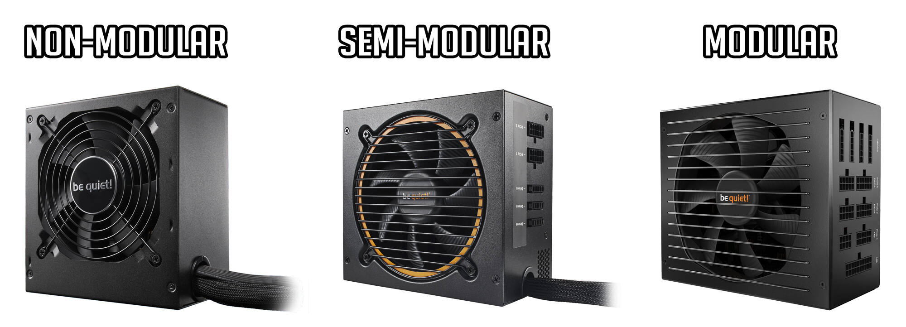

Building a gaming PC
A gaming PC needs:


Optional:

After knowing the parts needed, the next step is to figure out the parts you need.
According to gamespot to be able to play
Assasin Creed Valhalla
at 1080p, 30 FPS you would need:
CPU: 3.2 - 3.6GHz
RAM: 8GB
GPU: RX 570 - 8GB/GTX 1060 - 6GB
Storage: 50GB
Motherboard
This is the part that combines the rest of the parts and facilitate the communication between all the parts. For that reason it is important to choose a good motherboard
Things to look for in a motherboard:
- What CPU chipset does it support?
- What type and version of PCI-e does it have
Peripheral Component Interconnect Express (PCI-e) are the slots where you plug your expansion cards. expansion cards come with a set of pins that goes into these slots. x1, x4, x8 and x16. GPUs typically come in x16. In some motherboards they can be plugged into x8 but using only the x8 throughput. A test made by gamersnexus showed that there is no real difference in performance between x8 and x16 If it came to this pick the one that is cheaper. start from version 2.0 @ x16 and up. you want to aim at at a minimum you would need 1 GPU slot and 1 RAM slot.
- What size is it.
bigger forms have more expansion slots and therefore more options but smaller form factors are more compact and portable.
Below are the 3 common sizes.
motherboard models are manufactored to serve certain CPU chipsets. It is important to decide on the CPU before purchasing a motherboard.
if you go with an old model you would need to update the BIOS and to access it you need to have an old CPU.

Once you have picked the motherboard it is time to pick the main brain or the CPU
Central Processing Unit (CPU)
Your first part to pick should be the CPU because other parts depend on the chipset you choose
CPU purpose is to process software instructions. It is important to have a fast processor because slow processor contribute to the game lag.
Things to look for in a CPU:
- CPU clock speed (in GHz) A 3.2GHz process 3.2 billion instructions per second.
- Number of Cores it has.
Modern CPU chips come in multiple "cores". Each core acts as a an independent CPU.
more cores does not mean faster CPU. A 4 cores CPU is not 4x faster than 1 core CPU. It does however affect program performanceBased on my research it seems that 4 cores is a good number for most games.Random Access Memory (RAM)
RAM is used for temporary storage. its faster to retrieve information from RAM than directly from the long term storage. Current Gen4 comes in 7 speeds (Mhz) • DDR4 1600 • DDR4 1866 • DDR4 2133 • DDR4 2400 • DDR4 2666 • DDR4 2933 • DDR4 3200
Things to look for in a RAM
- Capacity (in GB) Capacity determine the max data the RAM can retain.
- speed (in Mhz) Speed determine the time it takes the RAM to retrieve Data from its table.
Speed or size? More RAM. RAMs are fairly fast in storing and retrieving data. A 6 to 8GB DDR4 RAM with 2133-2400Mhz should good for most games. The next RAM gen DDR5 comes out in 2020 with speeds reaching 4800Mhz. but adoption by CPU makers wont be till 21-22.
Graphical Processing Unit (GPU)
GPU like CPU but it process graphical instructions. These instructions are passed to the GPU for processing. What you should be looking for in a GPU:
- GPU clock speed (MHz)
- Memory bus (bits)
- vRAM size (MB)
- Memory clock rate (MHz)
- Memory bandwidth (GB/s)
Long Term Persistent Storage
This is a non-volatile storage medium. It is slower than a RAM SSD are faster than a HDD and more expensive too. it comes with different forms. If you want faster boot time and faster file transfers then SSD cards are desirable. They are typically less heavy and can be portable. HDD uses a moving disk to store data and that is slower than SSD.
Things to look for in storage device:
- size (GB)
- speed (GHz)
Cooling sources
You need some cooling device for your system to avoid overheating, like a car radiator. read more here but for our purposes a refular fan will suffice
Things you should be looking for
- pins in the fans
some fans connect and controlled automatically by the motherboard and some can be controlled by the user. Depending on the section you plug it in
Power Supply
PSU comes with 2 ratings: The 80+ And labels like original,bronze,silver,gold,platinum, or titanium The number is a rating that means a PSU is at least 80% effecient at different workloads. so at 100% workload. a PSU will supply at least 80%. The labels indicate extra effeciency at different workload ranging from 86% to 94% If you are going to pick a PSU with a label keep in mind that most PSU are most effecient at 50% workload. That means using 50% of what the PSU supply. After gathering the rest of the PC parts you need to figure out the amount of power you need. p50 = total-sys-power/.5 p80 = total-sys-power/.8 80+ means that it will work at 80% effecincy. so if your system need 350W and you have a 350W PSU then it will supply 350*.8W. The ratings are for effecincy at different workloads for example 80+ bronze has 82% effecincy at 20 to 100% workload. but 85% at 50%. titanium works at 90,92, and 94%
PSUs come in different forms Non-Modular: it comes with all the cables preconnected Semi-Modular: will have only the basic cables attached to the unit, like the 24-pin motherboard connector, the 8-pin CPU cable, and the PCIe power connector that will go into your GPU Modular: Comes without any cables attached to it. 
Display Monitor
Why bother with a gaming setup if you cannot enjoy the result? :) The Display plays an important part in the pc build process deserve its own article read more here but for our purposes ill keep it brief.
Things to look for in a Display Monitor
- How wide is it and what resuotion
does it support
width is the physical dimension of the Display my research showed me that a standard gaming display is 27-30 inches. with support for 1080p and more.
- How many Frames per second does it support
This can range from 64 to 128 FBS more frames = smoother picture. you do not need more than 32FPS
Keyboard and Mouse
If you want to game you want a keyboard that is big enough for fast tapping. For the Mouse you really can go with any. you can go for more aethetic Mouse but for the most part it will be the same
- The size of the key board
Chassis
Chassis are optional, Its just a way to neatly orgnize everything. you can hang them from the wall if you want to. If you decide to go with a chassis then have some points in mind Make sure there is a sufficent space for air to flow.
- the size of the chassis
you want a reasonable space between parts for air flow.
Building a Computer can be a fun activity once you become familiar with its components. Its like building a car engine but with no gas or pollution. If you feel ready or want to experement with the different factors mentioned above I recommend pc part picker